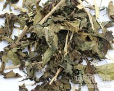

白鹤灵芝

拼音
Bái Hè Línɡ Zhī
别名
癣草
来源
爵床科白鹤灵芝属植物白鹤灵芝Rhinacanthus nasutus （L.） Lindau （R. communis Nees），以枝或叶入药。全年可采，鲜用或晒干。
生境分布
栽培或野生。分布广东、广西。
药材特点
灌木，有时近攀援状，高1～2米。茎圆柱形，被毛，节稍膨大。叶对生，椭圆形，长3～7厘米，宽2～3厘米，先端稍钝，全缘，下面叶脉明显，两面有毛；有短柄。花单生或2～3朵排成小聚伞花序，无柄；苞片和小苞片常短于花萼；萼5深裂，裂片线状披针形；花白色，花冠管延长，2唇形，上唇狭披针形，全缘或短2裂，最后外弯，下唇短，3裂；发育雄蕊2，花药2室，药室上下叠置，钝头；退化雄蕊缺；花盘杯状，子房下位，3室。蒴果长椭圆形。种子4颗或少数，有种钩。
性状
无性状数据
性味
甘、淡，平。
功能主治
清肺止咳，利湿止痒。用于肺结核早期；外用治体癣，湿疹。
用法用量
3～5钱；外用适量，鲜叶配煤油或75％酒精共捣烂或煎水洗患处。
化学成分
全草含黄嗣甙、酚类、氨基酸、有机酸、鞣质。
药理作用
1：细胞毒作用:从本植物根中提取的萘醌类化合物白鹤灵芝醌A、B,具有细胞毒作用
2：抗真菌作用:从叶和茎中提取的萘并吡喃衍生物3,4-二氢-3,3-二甲基-二氢-萘并[2,3-b]吡喃-5,10-二酮对小稻枯萎病病原体（真菌） Pyricularia oryzae有强抗真菌作用,其ED50为0.4×10-6（0.4ppm）；对此真菌孢子萌发的抑制率,在10×10-5（100ppm）时为82.3%
摘录
《全国中草药汇编》